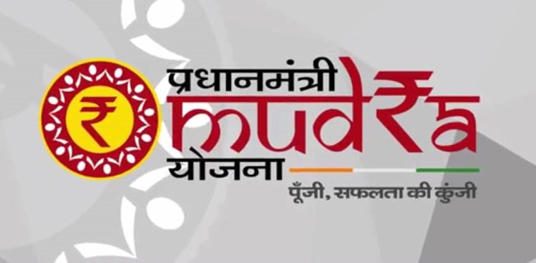

प्रधान मंत्री मुद्रा योजना

भारत सरकार द्वारा प्रधान मंत्री मुद्रा योजना की सहायता से बैंकिंग में असंबद्ध आबादी को लाने के लिए भारत सरकार की योजना है। यह उधारकर्ता को सभी सार्वजनिक क्षेत्र के बैंकों जैसे पीएसयू बैंक, क्षेत्रीय ग्रामीण बैंक और सहकारी बैंकों, विदेशी बैंकों और गैर-बैंकिंग वित्त कंपनियों (एनबीएफसी) से केवल 10 लाख रुपये तक के ऋण के लिए उधार लेने में सक्षम बनाता है और वह भी गतिविधियों के लिए जो कृषि क्षेत्र से आय उत्पन्न कर सकता है।
प्रधान मंत्री मुद्रा योजना के लिए पात्रता
महिलाओं, मालिकाना चिंता, फर्म, निजी सीमित कंपनी या किसी अन्य इकाई समेत कोई भी व्यक्ति पीएमएमवाई ऋण के तहत योग्य आवेदक हैं। लेकिन ध्यान में रखने वाली चीज केवल वह व्यक्ति है जिसकी गैर-कृषि क्षेत्र की आय उत्पन्न करने वाली गतिविधि जैसे व्यापार, विनिर्माण, प्रसंस्करण या सेवा क्षेत्र के लिए व्यवसाय योजना है।
योजना का उद्देश्य
इस योजना का उद्देश्य स्टार्ट-अप और व्यवसाय शुरू करना है जो हमारे देश के युवा दिमाग को बॉक्स के बाहर सोचने के लिए प्रोत्साहित करते हैं और कुछ नवीन और अधिक मांग में आते हैं।
इस योजना के तहत प्रदान किए गए ऋण के प्रकार
इस योजना के तहत तीन अलग-अलग प्रकार हैं-
1. शिशु: 50000 रुपये तक के ऋण को कवर करना।
2. किशोर: 50000 रुपये से ऊपर और 5 लाख रुपये तक के ऋण को कवर करना।
3. तरुण: 5 लाख रुपये से ऊपर और 10 लाख रुपये तक के ऋण को कवर करना।
ऋण की चुकौती
मांग ऋण के मामले में ऋण को अधिकतम 36 महीने और देरी के समय सहित सावधि ऋण के मामले में 84 महीने का भुगतान किया जाना चाहिए। इसके अलावा, ब्याज का भुगतान बैंक द्वारा प्रदान किए जाने वाले ऋण द्वारा लिया जाता है।
इस योजना के तहत ऋण लेने के दौरान बैंक को दी जाने वाली सुरक्षा
प्राथमिक सुरक्षा-
1. बैंक वित्त से प्राप्त सभी संपत्तियों की सूची।
2. व्यवसाय के प्रमोटर / निदेशकों की व्यक्तिगत गारंटी।
जमानत की सुरक्षा -
शून्य
ब्याज की दर
ब्याज दर तय नहीं की गई है और यह आपके व्यवसाय के प्रकार और जिस बैंक से आप ऋण ले रहे हैं उस पर निर्भर करेगी। इसके अलावा, सरकार कुछ सब्सिडी प्रदान कर सकती है, लेकिन प्रतिशत अभी भी घोषित नहीं किया गया है। यदि कोई हो तो हम आपको परिवर्तनों के बारे में अपडेट रखेंगे।
मुद्रा ऋण के लिए आवेदन कैसे करें?
उधारकर्ता, जो प्रधान मंत्री मुद्रा योजना (पीएमएमवाई) के तहत कोई मदद चाहते हैं, पीएसयू बैंक, क्षेत्रीय ग्रामीण बैंक और सहकारी बैंक इत्यादि के किसी भी वित्तीय संस्थान की स्थानीय शाखा से संपर्क कर सकते हैं। फिर आपको भरना होगा मुद्रा फॉर्म में।
आपको दो पासपोर्ट आकार की तस्वीरों और आपके व्यवसाय के विवरण के साथ बैंक को पहचान के प्रमाण और निवास के सबूत के साथ आपूर्ति करना होगा। फिर ऋण प्रदान करने की प्रक्रिया शुरू की जाएगी।बैंक के साथ खाता रखने से प्रक्रिया बहुत आसान हो जाएगी।
प्रत्येक आवेदक के लिए निम्नलिखित अंक याद रखना जरूरी है:
1. इस मुद्रा योजना के तहत कोई प्रसंस्करण शुल्क नहीं है।
2. ऋण प्राप्त करने के लिए कोई संपार्श्विक आवश्यक नहीं है।
3. आवेदक किसी भी बैंक या संस्थान का डिफाल्टर नहीं होना चाहिए।
ऐसे में, जो लोग खुद को खेती क्षेत्र से बाहर निकालने का लक्ष्य रखते हैं और एक नई व्यावसायिक योजना के साथ पैसे कमाने के लिए कुछ विचार है, इस योजना को देखना चाहिए। यह योजना उन्हें आसान ऋण प्रदान कर सकती है और इस प्रकार वे अपने व्यापार को शुरू कर सकते हैं।
Posted by Fintra Editor 2018-09-20